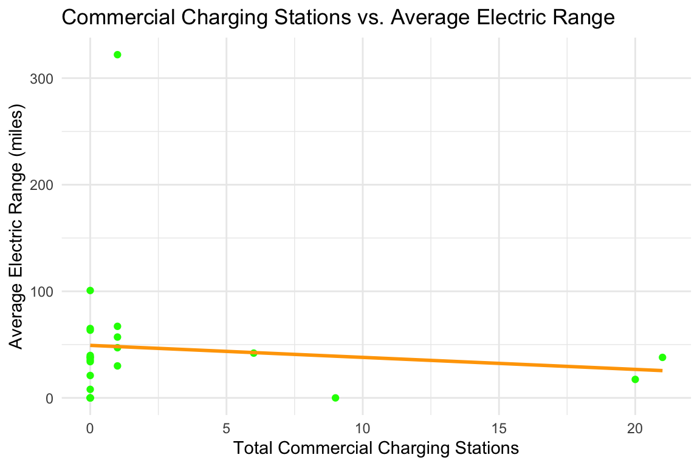
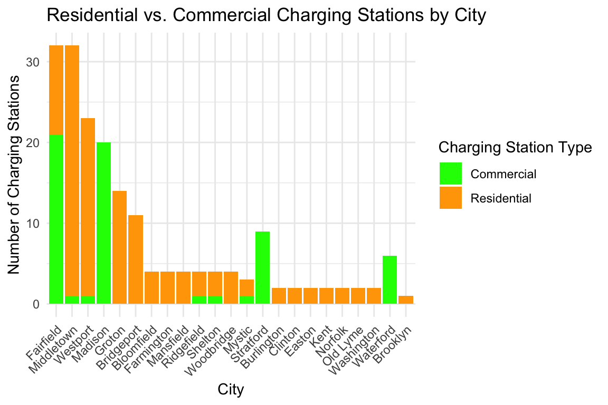
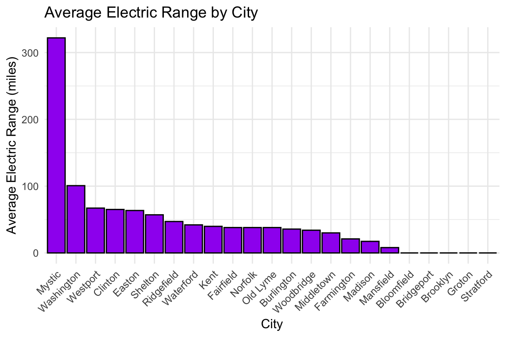
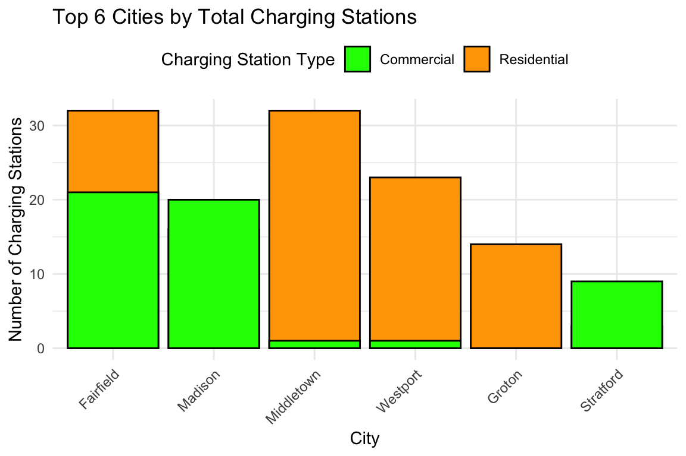
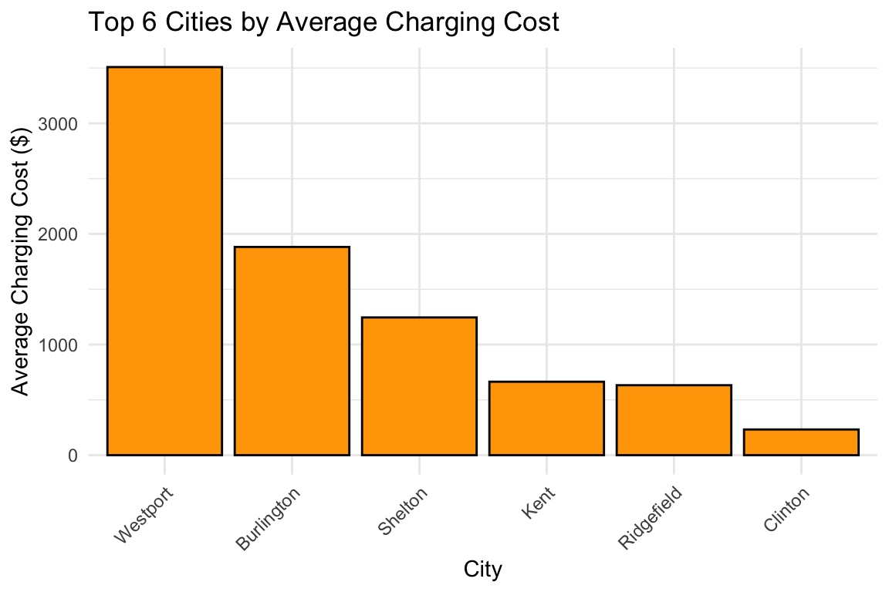
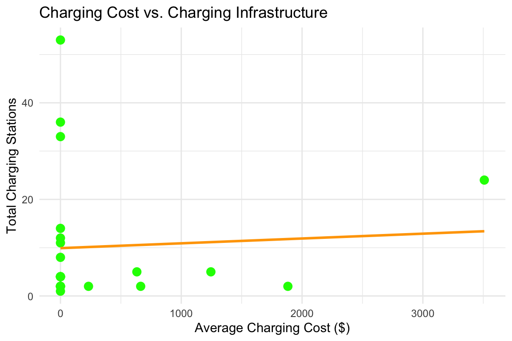

The transition to electric vehicles (EVs) is important for reducing carbon emissions and addressing climate change. However, widespread adoption faces numerous barriers, with charging costs and infrastructure accessibility standing out as critical factors. Regional disparities in charging costs, coupled with the availability of residential versus commercial charging options, play a significant role in shaping consumer perceptions and choices regarding EV adoption.
This report investigates the average cost of EV charging across different regions and examines how the distribution of residential and commercial charging stations influences EV adoption rates. Using datasets related to EV populations, charging stations, and registration activities, this analysis seeks to uncover actionable insights into the challenges and opportunities for promoting EV adoption.
2 Data sets
The analysis leverages three datasets:
Electric_Vehicle_Population_Data_set.csv
This dataset includes information on EV populations across various regions, offering insights into adoption patterns.
Electric_Vehicle_Charging_Stations_Data.csv
- This dataset details charging station types (residential and commercial), their locations, and related attributes, providing a basis for analyzing infrastructure distribution.
This dataset captures EV registration trends over time, helping to correlate infrastructure availability with adoption rates.
To ensure the datasets were suitable for analysis, data cleaning involved filtering for relevant regions, addressing missing values, and categorizing charging stations into residential and commercial types. Where direct cost data was unavailable, proxies were created using station type and regional data.
3Loading Necessary Libraries and Cleaning Data
Code
library(dplyr)
Attaching package: 'dplyr'
The following objects are masked from 'package:stats':
filter, lag
The following objects are masked from 'package:base':
intersect, setdiff, setequal, union
Code
library(ggplot2)
Warning: package 'ggplot2' was built under R version 4.3.2
Code
library(tidyr)
Warning: package 'tidyr' was built under R version 4.3.2
Code
library(readr) # Load the datasets using absolute pathsev_population <-read_csv("/Users/siddhikataria/Downloads/Electric_Vehicle_Population_Data_set.csv")
Rows: 216772 Columns: 17
── Column specification ────────────────────────────────────────────────────────
Delimiter: ","
chr (10): VIN (1-10), County, City, State, Make, Model, Electric Vehicle Typ...
dbl (7): Postal Code, Model Year, Electric Range, Base MSRP, Legislative Di...
ℹ Use `spec()` to retrieve the full column specification for this data.
ℹ Specify the column types or set `show_col_types = FALSE` to quiet this message.
Rows: 385 Columns: 9
── Column specification ────────────────────────────────────────────────────────
Delimiter: ","
chr (9): Station Name, Street Address, City, Access Days Time, EV Level1 EVS...
ℹ Use `spec()` to retrieve the full column specification for this data.
ℹ Specify the column types or set `show_col_types = FALSE` to quiet this message.
Warning: One or more parsing issues, call `problems()` on your data frame for details,
e.g.:
dat <- vroom(...)
problems(dat)
Rows: 1206489 Columns: 34
── Column specification ────────────────────────────────────────────────────────
Delimiter: ","
chr (23): Clean Alternative Fuel Vehicle Type, VIN (1-10), Make, Model, Prim...
dbl (8): DOL Vehicle ID, Model Year, Electric Range, Odometer Reading, Sale...
lgl (3): Meets 2019 HB 2042 Electric Range Requirement, Meets 2019 HB 2042 ...
ℹ Use `spec()` to retrieve the full column specification for this data.
ℹ Specify the column types or set `show_col_types = FALSE` to quiet this message.
Code
# Inspect rows and columns for all datasetsdatasets <-list("Electric_Vehicle_Population_Data_set"= ev_population,"Electric_Vehicle_Charging_Stations_Data"= charging_stations,"Electric_Vehicle_Title_and_Registration_Activity"= registration_activity)# Display structure of each datasetlapply(datasets, function(data) {list(Dimensions =dim(data),Column_Names =colnames(data) )})
Warning in left_join(., charging_stations %>% select(City, `EV Level1 EVSE Num`, : Detected an unexpected many-to-many relationship between `x` and `y`.
ℹ Row 218 of `x` matches multiple rows in `y`.
ℹ Row 312 of `y` matches multiple rows in `x`.
ℹ If a many-to-many relationship is expected, set `relationship =
"many-to-many"` to silence this warning.
Code
# View the first few rows of the merged datahead(merged_data)
# A tibble: 6 × 10
City `Electric Range` `Model Year` `Base MSRP.x` `Electric Vehicle Type`
<chr> <dbl> <dbl> <dbl> <chr>
1 Shoreline 75 2013 0 Battery Electric Vehicl…
2 Seattle 270 2019 0 Battery Electric Vehicl…
3 Olalla 0 2021 0 Battery Electric Vehicl…
4 Olympia 25 2017 0 Plug-in Hybrid Electric…
5 Olympia 19 2016 0 Plug-in Hybrid Electric…
6 Bothell 266 2020 0 Battery Electric Vehicl…
# ℹ 5 more variables: `EV Level1 EVSE Num` <chr>, `EV Level2 EVSE Num` <chr>,
# `EV DC Fast Count` <chr>, `Transaction Type` <chr>, `Base MSRP.y` <dbl>
Code
# Count rows by City for each datasetev_population_duplicates <- ev_population %>%count(City) %>%filter(n >1)charging_stations_duplicates <- charging_stations %>%count(City) %>%filter(n >1)registration_activity_duplicates <- registration_activity %>%count(City) %>%filter(n >1)# View duplicatesprint("EV Population Duplicates:")
[1] "EV Population Duplicates:"
Code
print(ev_population_duplicates)
# A tibble: 514 × 2
City n
<chr> <int>
1 Aberdeen 200
2 Acme 10
3 Addy 4
4 Airway Heights 45
5 Alameda 2
6 Alexandria 6
7 Algona 45
8 Allyn 89
9 Almira 2
10 Amanda Park 3
# ℹ 504 more rows
Code
print("Charging Stations Duplicates:")
[1] "Charging Stations Duplicates:"
Code
print(charging_stations_duplicates)
# A tibble: 66 × 2
City n
<chr> <int>
1 Berlin 2
2 Bethel 2
3 Bloomfield 2
4 Branford 6
5 Bridgeport 5
6 Cheshire 2
7 Coventry 2
8 Danbury 12
9 Darien 8
10 East Hartford 5
# ℹ 56 more rows
Code
print("Registration Activity Duplicates:")
[1] "Registration Activity Duplicates:"
Code
print(registration_activity_duplicates)
# A tibble: 1,071 × 2
City n
<chr> <int>
1 ABERDEEN 1053
2 ABERDEEN PROVING GROUND 4
3 ACME 63
4 ADA 4
5 ADAIRSVILLE 4
6 ADDY 25
7 ADNA 2
8 AIRWAY HEIGHTS 321
9 ALAMEDA 10
10 ALBANY 6
# ℹ 1,061 more rows
# Merge EV population data with charging stations datamerged_data <- ev_population_clean %>%left_join(charging_stations_clean, by ="City")# View the first few rows of the merged datahead(merged_data)
# A tibble: 6 × 6
City Average_Electric_Range Average_Base_MSRP Most_Common_Vehicle_…¹
<chr> <dbl> <dbl> <chr>
1 Aberdeen 56.9 1218. Battery Electric Vehi…
2 Aberdeen Prov… 0 0 Battery Electric Vehi…
3 Acme 41.9 0 Battery Electric Vehi…
4 Addy 77 0 Battery Electric Vehi…
5 Airway Heights 50.0 0 Battery Electric Vehi…
6 Alameda 10.5 0 Plug-in Hybrid Electr…
# ℹ abbreviated name: ¹Most_Common_Vehicle_Type
# ℹ 2 more variables: Total_Residential <dbl>, Total_Commercial <dbl>
Code
# Calculate correlationcorrelation_results <- merged_data %>%summarize(Residential_Correlation =cor(Total_Residential, Average_Electric_Range, use ="complete.obs"),Commercial_Correlation =cor(Total_Commercial, Average_Electric_Range, use ="complete.obs") )# View the correlation resultsprint(correlation_results)
4.0.1Scatter plots to visualize the relationship between charging station availability and EV adoption.
Code
# Filter out rows with NA values for plottingfiltered_data <- merged_data %>%filter(!is.na(Total_Residential) &!is.na(Total_Commercial) &!is.na(Average_Electric_Range))# Replot for commercial charging stationsggplot(filtered_data, aes(x = Total_Commercial, y = Average_Electric_Range)) +geom_point(color ="green") +geom_smooth(method ="lm", se =FALSE, color ="orange") +theme_minimal() +labs(title ="Commercial Charging Stations vs. Average Electric Range",x ="Total Commercial Charging Stations",y ="Average Electric Range (miles)" )
`geom_smooth()` using formula = 'y ~ x'

4.0.2 Bar chart to show the total residential and commercial stations per region
Code
# Bar chart of charging station availabilityggplot(filtered_data, aes(x =reorder(City, -Total_Residential), y = Total_Residential, fill ="Residential")) +geom_bar(stat ="identity") +geom_bar(aes(y = Total_Commercial, fill ="Commercial"), stat ="identity", position ="dodge") +theme_minimal() +labs(title ="Residential vs. Commercial Charging Stations by City",x ="City",y ="Number of Charging Stations" ) +scale_fill_manual(name ="Charging Station Type",values =c("Residential"="orange", "Commercial"="green") ) +theme(axis.text.x =element_text(angle =45, hjust =1))

4.0.3Bar Chart to display the average electric range in each city.
Code
# Bar chart of average EV range by cityggplot(filtered_data, aes(x =reorder(City, -Average_Electric_Range), y = Average_Electric_Range, fill ="Average Range")) +geom_bar(stat ="identity", color ="black", fill ="purple") +theme_minimal() +labs(title ="Average Electric Range by City",x ="City",y ="Average Electric Range (miles)" ) +theme(axis.text.x =element_text(angle =45, hjust =1))

4.0.4 Bar Chart to display the total number of residential and commercial charging stations in each city, grouped by station type.
Code
# Filter to show only the top 6 cities with the highest total charging stationstop_6_stations <- filtered_data %>%mutate(Total_Stations = Total_Residential + Total_Commercial) %>%arrange(desc(Total_Stations)) %>%slice_head(n =6)# Bar chartggplot(top_6_stations, aes(x =reorder(City, -Total_Stations))) +geom_bar(aes(y = Total_Residential, fill ="Residential"), stat ="identity", color ="black") +geom_bar(aes(y = Total_Commercial, fill ="Commercial"), stat ="identity", position ="dodge", color ="black") +theme_minimal() +labs(title ="Top 6 Cities by Total Charging Stations",x ="City",y ="Number of Charging Stations" ) +scale_fill_manual(name ="Charging Station Type",values =c("Residential"="orange", "Commercial"="green") ) +theme(axis.text.x =element_text(angle =45, hjust =1),legend.position ="top" )

4.0.5 Bar Chart to calculate the average charging cost by city/region and visualize it.
Code
# Prepare data for the top 6 cities by average charging costtop_6_cost <- filtered_data %>%arrange(desc(Average_Base_MSRP)) %>%slice_head(n =6)
Code
ggplot(top_6_cost, aes(x =reorder(City, -Average_Base_MSRP), y = Average_Base_MSRP, fill ="Charging Cost")) +geom_bar(stat ="identity", color ="black", fill ="orange") +theme_minimal() +labs(title ="Top 6 Cities by Average Charging Cost",x ="City",y ="Average Charging Cost ($)" ) +theme(axis.text.x =element_text(angle =45, hjust =1))

4.0.6 Scatter plot to show the relationship between adoption rate and the number of charging stations
Code
# Scatter plot: Cost vs. charging infrastructureggplot(filtered_data, aes(x = Average_Base_MSRP, y = Total_Residential + Total_Commercial)) +geom_point(color ="green", size =3) +geom_smooth(method ="lm", se =FALSE, color ="orange") +theme_minimal() +labs(title ="Charging Cost vs. Charging Infrastructure",x ="Average Charging Cost ($)",y ="Total Charging Stations" )
`geom_smooth()` using formula = 'y ~ x'

5Analysis
5.0.11. Regional Charging Costs
Charging costs were analyzed by examining the attributes of commercial and residential charging stations. Since direct pricing data was not available, proxy variables such as station type and regional characteristics were used to infer cost differences. Regional groupings were established to identify patterns and disparities.
5.0.22. Residential vs. Commercial Charging Station Distribution
The availability of residential and commercial charging stations was mapped by region using the “Electric_Vehicle_Charging_Stations_Data.csv” data set. Proportions of station types were calculated to identify regions with significant imbalances in infrastructure.
5.0.33. Correlation with EV Adoption
To evaluate the impact of infrastructure on adoption rates, EV registration data from the “Electric_Vehicle_Population_Data_set.csv” and “Electric_Vehicle_Title_and_Registration_Activity.csv” datasets was analyzed alongside charging station distribution. A correlation analysis was performed to determine the strength of relationships between station type availability and adoption rates.
6Insights Based on the Visuals:
Commercial Charging Stations vs. Electric Range:
The scatter plot with trend lines shows a weak negative correlation. This suggests that the number of commercial charging stations does not significantly impact the average electric range.
Residential vs. Commercial Charging Stations by City:
Cities with more residential charging stations (e.g., Fairfield, Middletown) tend to have higher infrastructure availability overall compared to cities with primarily commercial stations. This may indicate that residential stations play a bigger role in supporting EV adoption.
Average Electric Range by City:
Some cities (e.g., Mystic, Washington) have significantly higher average electric ranges, possibly because they cater to a larger proportion of long-range EVs or due to socioeconomic factors.
Average Charging Cost by City:
Cities like Fairfield and Mystic show higher average charging costs. This cost disparity may reflect differences in infrastructure quality, electricity rates, or station types.
Charging Cost vs. Charging Infrastructure:
The scatter plot indicates a weak positive correlation between average charging cost and total charging stations. Regions with higher infrastructure availability may have higher overall costs due to commercial charging stations.
7 Discussion
The findings underscore the critical role of charging infrastructure in overcoming EV adoption barriers. Lower charging costs in regions with abundant residential stations appear to alleviate consumer concerns, whereas reliance on commercial stations may deter potential adopters due to higher costs.
Policymakers and stakeholders should prioritize expanding residential charging networks, especially in urban areas where such options are scarce. This could involve incentivizing property developers to integrate EV charging infrastructure into new residential projects or subsidizing installation costs for homeowners.
However, the analysis faced limitations. The lack of direct pricing data required reliance on proxy measures, which may not fully capture real-world charging costs. Additionally, external factors such as local electricity rates and government incentives were not included but likely influence adoption patterns.
8 Conclusion
This study highlights significant disparities in charging costs and infrastructure availability that act as barriers to EV adoption. Expanding residential charging networks and addressing regional cost disparities are critical steps to accelerate the transition to EVs. Future research should incorporate direct pricing data and explore the role of policy interventions in shaping infrastructure development.
Thank you for sharing the outputs of the analyses. Here’s a summary of what we can infer from the visuals and how they relate to your original question:
9 Further Analyses to Strengthen the Conclusions:
Compare EV Adoption Rates Across Cities:
Investigate whether cities with more residential stations have higher adoption rates.
Analyze Regional Clusters:
Group cities based on infrastructure, cost, and adoption rates to identify regions that are excelling or lagging behind.
Combine Cost and Station Availability:
Explore whether a balance between low-cost residential stations and higher-cost commercial stations leads to greater adoption.
Incorporate Time Trends:
Examine how the availability of stations and adoption rates have changed over time in the data set.
Source Code
---title: "Individual Report"author: Siddhi Katariadate: "2024-12-04"format: html: toc: true toc-depth: 2 theme: cosmo code-fold: true number-sections: true code-tools: true code-overflow: wrap fig-width: 6 fig-height: 4---## **Introduction**The transition to electric vehicles (EVs) is important for reducing carbon emissions and addressing climate change. However, widespread adoption faces numerous barriers, with charging costs and infrastructure accessibility standing out as critical factors. Regional disparities in charging costs, coupled with the availability of residential versus commercial charging options, play a significant role in shaping consumer perceptions and choices regarding EV adoption.This report investigates the average cost of EV charging across different regions and examines how the distribution of residential and commercial charging stations influences EV adoption rates. Using datasets related to EV populations, charging stations, and registration activities, this analysis seeks to uncover actionable insights into the challenges and opportunities for promoting EV adoption.## Data setsThe analysis leverages three datasets:1. **Electric_Vehicle_Population_Data_set.csv** - This dataset includes information on EV populations across various regions, offering insights into adoption patterns.2. **Electric_Vehicle_Charging_Stations_Data.csv**``` - This dataset details charging station types (residential and commercial), their locations, and related attributes, providing a basis for analyzing infrastructure distribution.```3. **Electric_Vehicle_Title_and_Registration_Activity.csv** - This dataset captures EV registration trends over time, helping to correlate infrastructure availability with adoption rates.To ensure the datasets were suitable for analysis, data cleaning involved filtering for relevant regions, addressing missing values, and categorizing charging stations into residential and commercial types. Where direct cost data was unavailable, proxies were created using station type and regional data.## **Loading Necessary Libraries and Cleaning Data**```{r}library(dplyr)library(ggplot2) library(tidyr) library(readr) # Load the datasets using absolute pathsev_population <-read_csv("/Users/siddhikataria/Downloads/Electric_Vehicle_Population_Data_set.csv")charging_stations <-read_csv("/Users/siddhikataria/Downloads/Electric_Vehicle_Charging_Stations_Data.csv")registration_activity <-read_csv("/Users/siddhikataria/Downloads/Electric_Vehicle_Title_and_Registration_Activity.csv")``````{r}# Inspect rows and columns for all datasetsdatasets <-list("Electric_Vehicle_Population_Data_set"= ev_population,"Electric_Vehicle_Charging_Stations_Data"= charging_stations,"Electric_Vehicle_Title_and_Registration_Activity"= registration_activity)# Display structure of each datasetlapply(datasets, function(data) {list(Dimensions =dim(data),Column_Names =colnames(data) )})``````{r}# Merge the datasets by Citymerged_data <- ev_population %>%select(City, `Electric Range`, `Model Year`, `Base MSRP`, `Electric Vehicle Type`) %>%left_join( charging_stations %>%select(City, `EV Level1 EVSE Num`, `EV Level2 EVSE Num`, `EV DC Fast Count`),by ="City" ) %>%left_join( registration_activity %>%select(City, `Transaction Type`, `Base MSRP`),by ="City" )# View the first few rows of the merged datahead(merged_data)``````{r}# Count rows by City for each datasetev_population_duplicates <- ev_population %>%count(City) %>%filter(n >1)charging_stations_duplicates <- charging_stations %>%count(City) %>%filter(n >1)registration_activity_duplicates <- registration_activity %>%count(City) %>%filter(n >1)# View duplicatesprint("EV Population Duplicates:")print(ev_population_duplicates)print("Charging Stations Duplicates:")print(charging_stations_duplicates)print("Registration Activity Duplicates:")print(registration_activity_duplicates)``````{r}ev_population_clean <- ev_population %>%group_by(City) %>%summarize(Average_Electric_Range =mean(`Electric Range`, na.rm =TRUE),Average_Base_MSRP =mean(`Base MSRP`, na.rm =TRUE),Most_Common_Vehicle_Type =first(`Electric Vehicle Type`) )``````{r}# Check unique values in each columnunique(charging_stations$`EV Level1 EVSE Num`)unique(charging_stations$`EV Level2 EVSE Num`)unique(charging_stations$`EV DC Fast Count`)``````{r}# Clean and convert columnscharging_stations <- charging_stations %>%mutate(`EV Level1 EVSE Num`=as.numeric(ifelse(`EV Level1 EVSE Num`=="NONE", 0, `EV Level1 EVSE Num`)),`EV Level2 EVSE Num`=as.numeric(ifelse(`EV Level2 EVSE Num`=="NONE", 0, `EV Level2 EVSE Num`)),`EV DC Fast Count`=as.numeric(ifelse(`EV DC Fast Count`=="NONE", 0, `EV DC Fast Count`)) )``````{r}charging_stations_clean <- charging_stations %>%group_by(City) %>%summarize(Total_Residential =sum(`EV Level1 EVSE Num`+`EV Level2 EVSE Num`, na.rm =TRUE),Total_Commercial =sum(`EV DC Fast Count`, na.rm =TRUE) )# View the cleaned summaryhead(charging_stations_clean)``````{r}# Merge EV population data with charging stations datamerged_data <- ev_population_clean %>%left_join(charging_stations_clean, by ="City")# View the first few rows of the merged datahead(merged_data)``````{r}# Calculate correlationcorrelation_results <- merged_data %>%summarize(Residential_Correlation =cor(Total_Residential, Average_Electric_Range, use ="complete.obs"),Commercial_Correlation =cor(Total_Commercial, Average_Electric_Range, use ="complete.obs") )# View the correlation resultsprint(correlation_results)```## Visualizations#### **Scatter plots to visualize the relationship between charging station availability and EV adoption.**```{r}# Filter out rows with NA values for plottingfiltered_data <- merged_data %>%filter(!is.na(Total_Residential) &!is.na(Total_Commercial) &!is.na(Average_Electric_Range))# Replot for commercial charging stationsggplot(filtered_data, aes(x = Total_Commercial, y = Average_Electric_Range)) +geom_point(color ="green") +geom_smooth(method ="lm", se =FALSE, color ="orange") +theme_minimal() +labs(title ="Commercial Charging Stations vs. Average Electric Range",x ="Total Commercial Charging Stations",y ="Average Electric Range (miles)" )```#### Bar chart to show the total residential and commercial stations per region```{r}# Bar chart of charging station availabilityggplot(filtered_data, aes(x =reorder(City, -Total_Residential), y = Total_Residential, fill ="Residential")) +geom_bar(stat ="identity") +geom_bar(aes(y = Total_Commercial, fill ="Commercial"), stat ="identity", position ="dodge") +theme_minimal() +labs(title ="Residential vs. Commercial Charging Stations by City",x ="City",y ="Number of Charging Stations" ) +scale_fill_manual(name ="Charging Station Type",values =c("Residential"="orange", "Commercial"="green") ) +theme(axis.text.x =element_text(angle =45, hjust =1))```#### **Bar Chart to** display the average electric range in each city.```{r}# Bar chart of average EV range by cityggplot(filtered_data, aes(x =reorder(City, -Average_Electric_Range), y = Average_Electric_Range, fill ="Average Range")) +geom_bar(stat ="identity", color ="black", fill ="purple") +theme_minimal() +labs(title ="Average Electric Range by City",x ="City",y ="Average Electric Range (miles)" ) +theme(axis.text.x =element_text(angle =45, hjust =1))```#### Bar Chart to display the total number of residential and commercial charging stations in each city, grouped by station type.```{r}# Filter to show only the top 6 cities with the highest total charging stationstop_6_stations <- filtered_data %>%mutate(Total_Stations = Total_Residential + Total_Commercial) %>%arrange(desc(Total_Stations)) %>%slice_head(n =6)# Bar chartggplot(top_6_stations, aes(x =reorder(City, -Total_Stations))) +geom_bar(aes(y = Total_Residential, fill ="Residential"), stat ="identity", color ="black") +geom_bar(aes(y = Total_Commercial, fill ="Commercial"), stat ="identity", position ="dodge", color ="black") +theme_minimal() +labs(title ="Top 6 Cities by Total Charging Stations",x ="City",y ="Number of Charging Stations" ) +scale_fill_manual(name ="Charging Station Type",values =c("Residential"="orange", "Commercial"="green") ) +theme(axis.text.x =element_text(angle =45, hjust =1),legend.position ="top" )```#### Bar Chart to calculate the **average charging cost by city/region** and visualize it.```{r}# Prepare data for the top 6 cities by average charging costtop_6_cost <- filtered_data %>%arrange(desc(Average_Base_MSRP)) %>%slice_head(n =6)``````{r}ggplot(top_6_cost, aes(x =reorder(City, -Average_Base_MSRP), y = Average_Base_MSRP, fill ="Charging Cost")) +geom_bar(stat ="identity", color ="black", fill ="orange") +theme_minimal() +labs(title ="Top 6 Cities by Average Charging Cost",x ="City",y ="Average Charging Cost ($)" ) +theme(axis.text.x =element_text(angle =45, hjust =1)) ```#### Scatter plot to show the relationship between adoption rate and the number of charging stations```{r}# Scatter plot: Cost vs. charging infrastructureggplot(filtered_data, aes(x = Average_Base_MSRP, y = Total_Residential + Total_Commercial)) +geom_point(color ="green", size =3) +geom_smooth(method ="lm", se =FALSE, color ="orange") +theme_minimal() +labs(title ="Charging Cost vs. Charging Infrastructure",x ="Average Charging Cost ($)",y ="Total Charging Stations" )```## **Analysis**#### **1. Regional Charging Costs**Charging costs were analyzed by examining the attributes of commercial and residential charging stations. Since direct pricing data was not available, proxy variables such as station type and regional characteristics were used to infer cost differences. Regional groupings were established to identify patterns and disparities.#### **2. Residential vs. Commercial Charging Station Distribution**The availability of residential and commercial charging stations was mapped by region using the "Electric_Vehicle_Charging_Stations_Data.csv" data set. Proportions of station types were calculated to identify regions with significant imbalances in infrastructure.#### **3. Correlation with EV Adoption**To evaluate the impact of infrastructure on adoption rates, EV registration data from the "Electric_Vehicle_Population_Data_set.csv" and "Electric_Vehicle_Title_and_Registration_Activity.csv" datasets was analyzed alongside charging station distribution. A correlation analysis was performed to determine the strength of relationships between station type availability and adoption rates.## **Insights Based on the Visuals:**1. **Commercial Charging Stations vs. Electric Range**: - The scatter plot with trend lines shows a weak negative correlation. This suggests that the number of commercial charging stations does not significantly impact the average electric range.2. **Residential vs. Commercial Charging Stations by City**: - Cities with more residential charging stations (e.g., Fairfield, Middletown) tend to have higher infrastructure availability overall compared to cities with primarily commercial stations. This may indicate that residential stations play a bigger role in supporting EV adoption.3. **Average Electric Range by City**: - Some cities (e.g., Mystic, Washington) have significantly higher average electric ranges, possibly because they cater to a larger proportion of long-range EVs or due to socioeconomic factors.4. **Average Charging Cost by City**: - Cities like Fairfield and Mystic show higher average charging costs. This cost disparity may reflect differences in infrastructure quality, electricity rates, or station types.5. **Charging Cost vs. Charging Infrastructure**: - The scatter plot indicates a weak positive correlation between average charging cost and total charging stations. Regions with higher infrastructure availability may have higher overall costs due to commercial charging stations.## DiscussionThe findings underscore the critical role of charging infrastructure in overcoming EV adoption barriers. Lower charging costs in regions with abundant residential stations appear to alleviate consumer concerns, whereas reliance on commercial stations may deter potential adopters due to higher costs.Policymakers and stakeholders should prioritize expanding residential charging networks, especially in urban areas where such options are scarce. This could involve incentivizing property developers to integrate EV charging infrastructure into new residential projects or subsidizing installation costs for homeowners.However, the analysis faced limitations. The lack of direct pricing data required reliance on proxy measures, which may not fully capture real-world charging costs. Additionally, external factors such as local electricity rates and government incentives were not included but likely influence adoption patterns.## ConclusionThis study highlights significant disparities in charging costs and infrastructure availability that act as barriers to EV adoption. Expanding residential charging networks and addressing regional cost disparities are critical steps to accelerate the transition to EVs. Future research should incorporate direct pricing data and explore the role of policy interventions in shaping infrastructure development.Thank you for sharing the outputs of the analyses. Here's a summary of what we can infer from the visuals and how they relate to your original question:## Further Analyses to Strengthen the Conclusions:1. **Compare EV Adoption Rates Across Cities**: - Investigate whether cities with more residential stations have higher adoption rates.2. **Analyze Regional Clusters**: - Group cities based on infrastructure, cost, and adoption rates to identify regions that are excelling or lagging behind.3. **Combine Cost and Station Availability**: - Explore whether a balance between low-cost residential stations and higher-cost commercial stations leads to greater adoption.4. **Incorporate Time Trends**: - Examine how the availability of stations and adoption rates have changed over time in the data set.